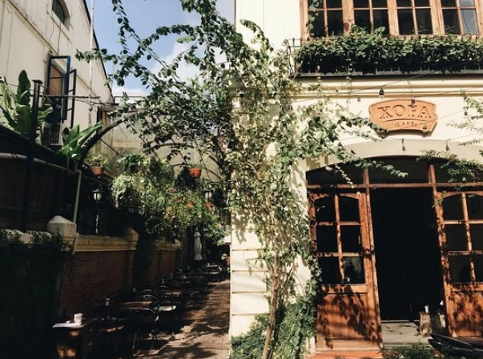
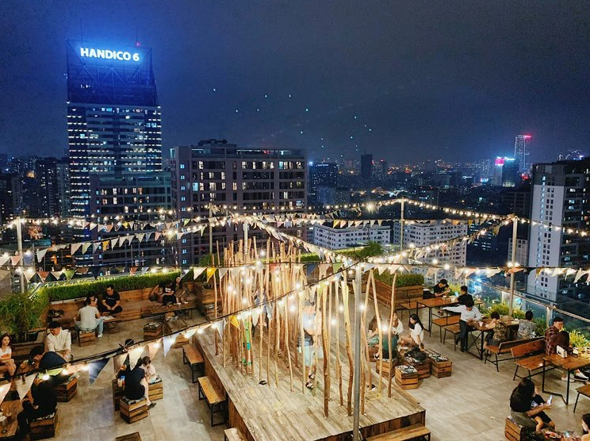
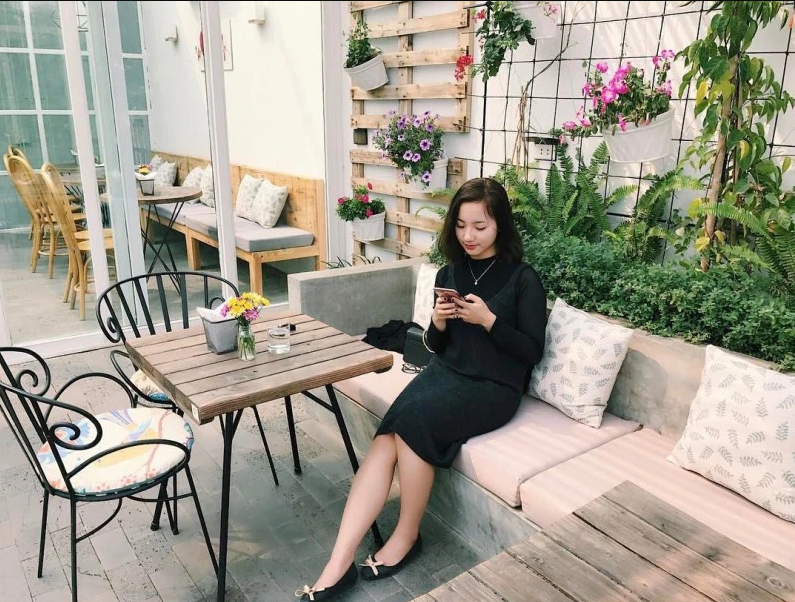
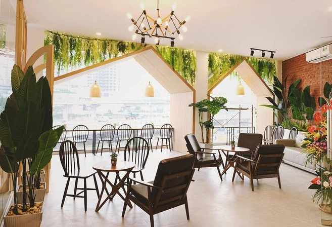
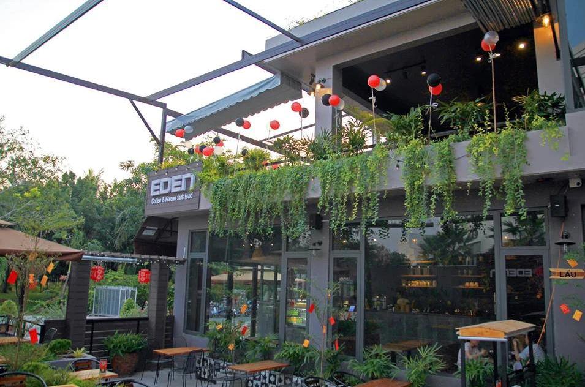

Hãy chậm lại một chút giữa cuộc sống xô bồ hối hả với trải nghiệm thư giãn tại Xofa cafe nhé. Nếu bạn đang sống tại Hà Nội thì chắc hẳn đã nghe tới cái tên này rồi bởi đây là một trong những quán cafe đầu tiên có phong cách cổ điển vô cùng giản dị. Bên trong quán được trang trí ấm cúng với nhiều giá sách, sofa cực êm, đồ uống thơm ngon còn bên ngoài lại là cả vườn cây thoáng đãng. Tha hồ nhâm nhi cafe đọc sách. Hơn hết, quán còn mở xuyên đêm nên nếu bạn muốn có một trải nghiệm mới lạ, dẫn bạn bè, người yêu đi trốn thì hãy ghé qua đây thử một lần nhé. Hơn thế, quán còn nằm ngay tại con phố ẩm thực Tống Duy Tân nên nếu không ngại dậy sớm bạn có thể ghé thưởng thức các món ăn đa dạng, hấp dẫn tại đây, rồi ra bờ hồ đón bình minh vô cùng lãng mạn nhé.
Nếu bạn là người yêu thích không gian ngoài trời, siêu thoáng thì đây đúng là điểm cafe lý tưởng nhất đó. Nằm trên sân thượng của tòa nhà cao 26 tầng, Trill rooftop cafe mang đến cho thực khách cảm giác vô cùng thư giãn khi vừa thưởng thức đồ uống ngon, vừa được hóng gió mát, ngắm khung cảnh thành phố từ trên cao. À mà tại đây còn có chiếc bể bơi cực to, xanh ngắt, vào buổi tối sáng lung linh, cho bạn tha hồ sống ảo đấy nhé. Ờ mà đó chưa phải đã hết đâu, quán còn trang bị thêm không gian bên trong nhà có mái che giúp bạn tránh mưa, nắng hoặc để đón khách vào mùa đông giá rét. Không gian bên trong cũng cực nghệ với màu trắng chủ đạo, vật dụng decor được thay đổi liên tục, sáng tạo không ngừng. Đến Trill để được chill với bạn bè, người thân ngay thui nào, nếu ghé vào buổi tối hãy đến vào khoảng 7h-8h để đảm bảo còn chỗ ngồi nhá. Quán hot nên lúc nào cũng đông khách luôn ấy.
Đã đến Hà Nội thì đừng quên rủ bạn bè ghé qua Cup Of Tea Cafe & Bistro nhé. Với không gian ba tầng thoáng đãng, tràn ngập cây lá cùng tông trắng chủ đạo, chắc chắn bạn sẽ có những bức ảnh sống ảo ấn tượng để đăng facebook cho mà xem. Hơn cả là đồ uống và bánh ngọt ở đây cực ngon đó nhé, món cafe, sinh tố, đá xay siêu đa dạng, tha hồ mà chọn lựa và thưởng thức. Hiện nay quán đã có 2 cơ sở là ở Cầu Giấy và ở Hồ Tây, nếu bạn thích ngồi ngắm hồ, đón hoàng hôn trên cao thì nên ghé địa chỉ tại Hồ Tây để trải nghiệm nhé.
Lofita Cafe là điểm đến phù hợp với những những ai thích đồ uống “healthy” như trà cam thảo, trà đào, trà cam gừng, nước ép trái cây, ….Không những thế ở đây còn thu hút thực khách bởi không gian lãng mạn, thoáng đãng, được trang trí cầu kỳ với cây cối và đèn led. Hãy thử ghé qua một lần để trải nghiệm nhé!
Là một trong những quán cafe đẹp ở Hà Nội, Eden coffee thu hút thực khách bởi không gian 3 tầng cực thoáng mát, ban công và sân thượng view thẳng ra nhà thờ, đem lại trải nghiệm ấn tượng cho bất kỳ ai. Hơn nữa bên trong quán còn được trang trí theo phong cách vintage nên trông khá giản dị và ấm áp. Thậm chí đây còn là nơi xuất hiện trong một số shoot ảnh cực nghệ của người nổi tiếng, thu hút cả những khách du lịch tới chơi.
